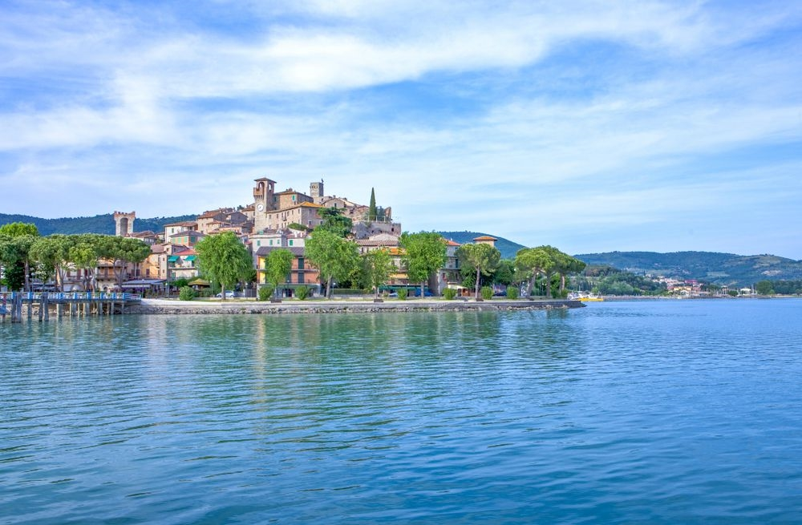
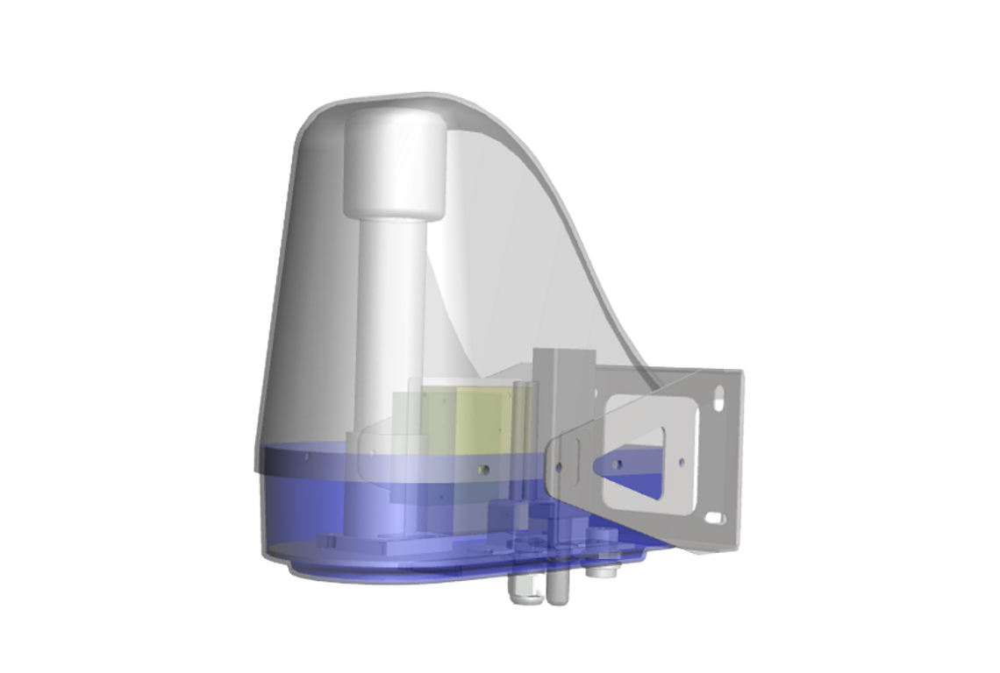
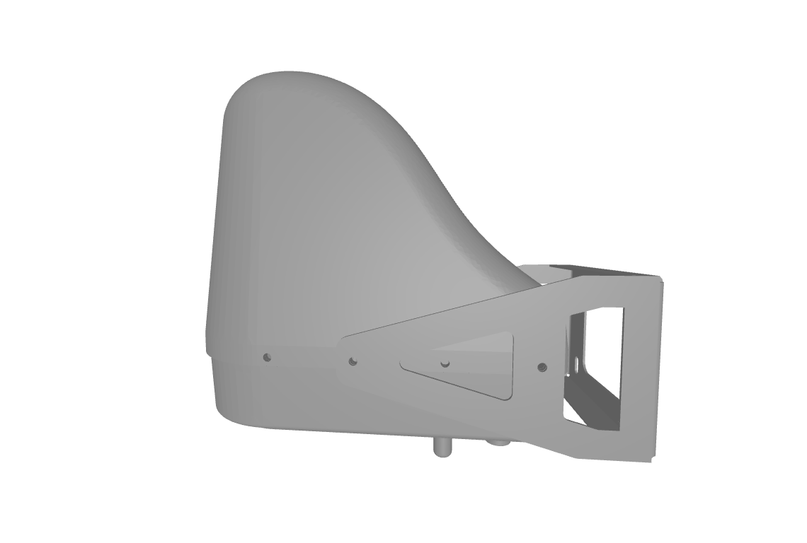
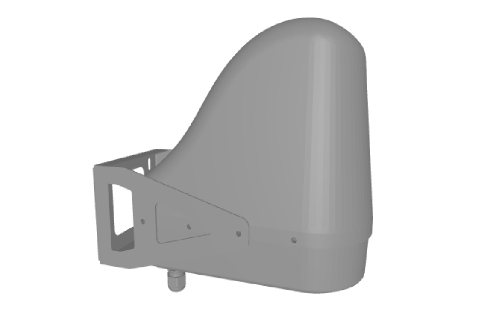

Benvenuto in Wondertech!
Wondertech è una giovane azienda fondata da 5 ragazzi nel 2021 in Umbria, sulle rive del Lago Trasimeno

Ecosentinel
Il nuovo innovative sensore per il rilevamento ambientale ideato e realizzato intermanete in Umbria.
- 
- 
- 